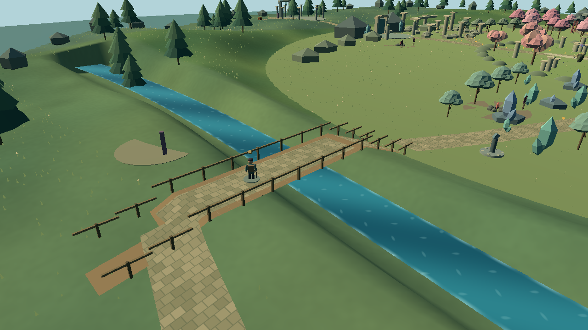
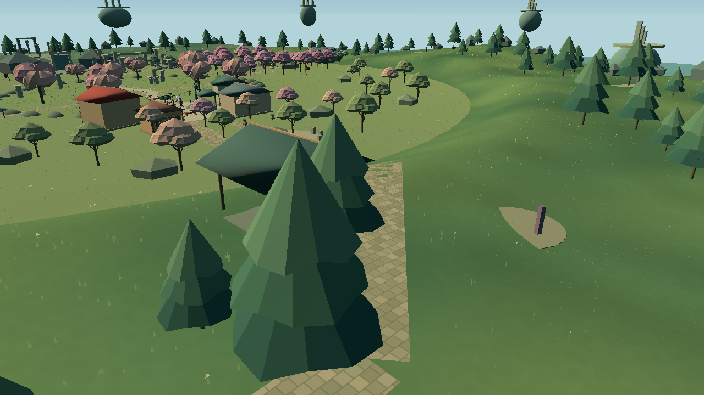
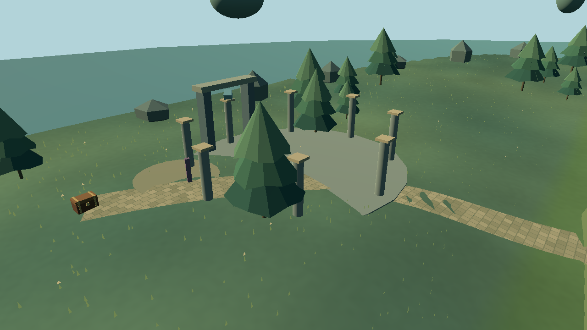
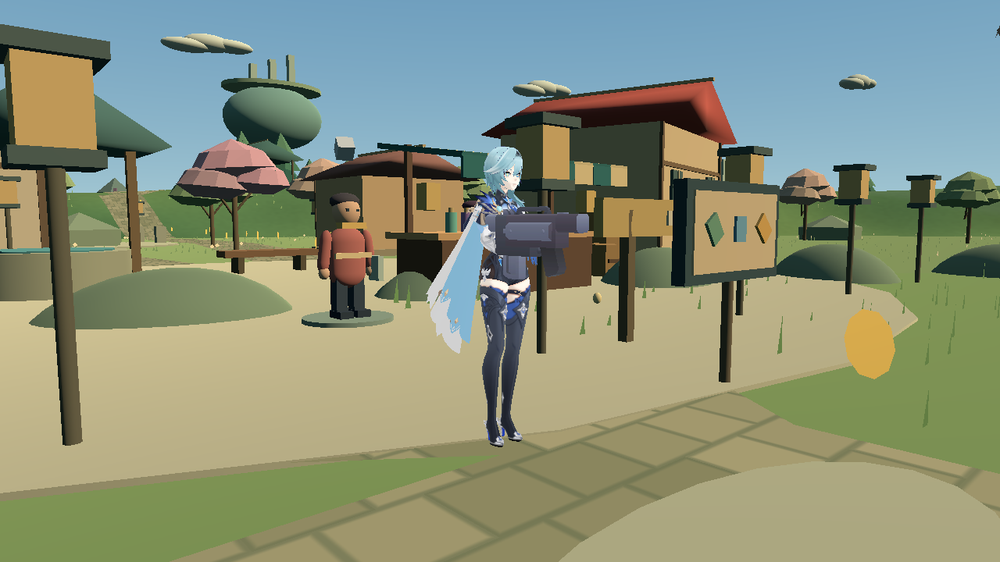

THE MOONWELL SECRET
Listen to the village whispers.
Find the grotto, solve its rune puzzle and claim a reward that’s yours to keep.

✧ AN AETHERFALL STORY
Follow the trails. Face the Rift.
Become the hero of your own little adventure.
Free fantasy RPG prototype • No in-game purchases
01 / THE WORLD IS WAITING
Aetherfall is a compact island of quiet villages, winding rivers, old ruins and a sleeping threat. Play as Teja, help the people you meet, recover three sigils and make your way to the Rift Warden.

Eleven regions, six treasure chests and trails worth following.

THE MOONWELL SECRET
Find the grotto, solve its rune puzzle and claim a reward that’s yours to keep.

IN-GAME / THREE WEAPONS02 / FIND YOUR RHYTHM
Chain sword strikes, aim a Dawn Sidearm or keep your distance with the Aurora Rifle. Watch for enemy attack tells, dodge the danger and unleash Frost Nova.
Your starting blade. Three strikes, one flowing combo.
Precise shots. Eight rounds. Unlock with earned coins.
A faster rhythm and an eighteen-round magazine.
Earn coins through play. Visit the village armory, improve your equipment and learn new talents.
03 / CHOOSE YOUR WAY IN
Play the same Aetherfall adventure in a laptop browser, or take it with you on Android. Each version keeps its own progress on the device you use.
No game installation. Open the adventure, click to begin and use your keyboard and mouse.
A downloadable APK with touch controls. Turn your phone sideways and let the journey begin.
The native PC edition includes two-player internet rooms. Invite a friend and share the adventure.
An iOS app is not available yet. It needs a Mac, Apple signing and device testing; there is no iPhone download in this release.
Downloads are hosted on GitHub Releases. File sizes and SHA-256 checksums are available for verification.
04 / MAKE YOUR FIRST MOVE
Move the mouse to look around. Left-click to attack or fire. Hold Alt to use HUD buttons, and press Escape for menus.
Landscape play keeps both thumbs clear of the action. The layout adapts to the phone’s safe area; rotating upright displays a turn-phone prompt.
A FRIEND BESIDE YOU
Windows co-op lets you face the journey together. Coins, upgrades, quests and victory are shared. You each keep your own health, ammo and equipment choice.
WINDOWS EDITION ONLYChoose Online co-op, then Host an online room.
Copy the whole room code and share it privately with your friend.
Your friend pastes the code and joins. Keep the host’s PC and game running.
Temporary rooms use a free relay and can be affected by network conditions. The host stores team progress; joining never replaces the guest’s solo save. Browser and Android editions are solo in this release.
BEFORE YOU SET OUT
These are compatibility targets and the tested PC configuration, not guaranteed frame rates. Close heavy apps on an 8 GB laptop. Download sizes appear above; leave extra space for extraction and saves.
Download the APK on your Android phone and open it from Downloads. Review your phone’s installation prompt for this file, complete the installation, then open Teja’s Impact. Rotate the phone horizontally. This is a direct test build, not a Play Store release.
Progress is saved locally. The browser edition uses this browser’s site storage; clearing site data or using temporary browsing can remove it. Android and Windows keep their own saves. Progress does not sync between devices, editions or accounts.
The native Windows and Android solo adventures run locally after download. Browser play needs an internet connection to load its game files. Internet co-op needs both players online throughout the session.
Use a current desktop browser, enable hardware acceleration and close heavy tabs. Click inside the game to give it focus. Escape releases the cursor. If loading fails, reload the game page; a clear error message and retry option will appear when a download fails. Try the Windows download if your browser cannot run WebGL 2.
This is a playable independent prototype: one bounded island, one character skin, three weapons, three NPC missions, a grotto puzzle and one main boss. It has procedural scenery and authored animations. It is not affiliated with Genshin Impact, HoYoverse or Wuthering Waves.
This static site adds no analytics, advertising or game account system. Your hosting provider may process ordinary connection logs. Game progress stays on your device. Windows co-op exchanges gameplay state through a temporary relay; treat its invite like a private room key.
THE PATH IS YOURS